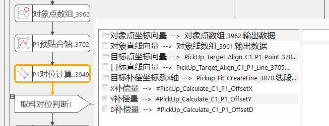
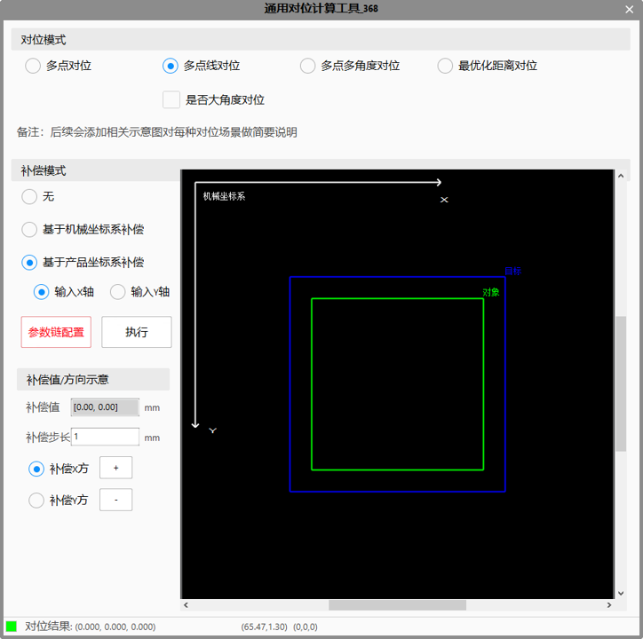

Tham khảo công cụ tính toán căn chỉnh thông dụng
Tham khảo công cụ tính toán căn chỉnh thông dụng
Công cụ này sử dụng phối hợp với quản lý hiệu chuẩn căn chỉnh, tức là thực hiện hiệu chuẩn camera trong quản lý hiệu chuẩn căn chỉnh, khi tính toán căn chỉnh thì chọn kết quả hiệu chuẩn trong thanh thuộc tính.
Sau khi hoàn tất hiệu chuẩn camera, có thể dựa trên kết quả hiệu chuẩn để tính ra giá trị tọa độ của một điểm bất kỳ trong ảnh dưới hệ tọa độ cơ khí. Từ đó, khi mục tiêu và đối tượng cần thực hiện tính toán căn chỉnh, hai camera lần lượt chụp ảnh mục tiêu và đối tượng, đồng thời tính giá trị tọa độ cơ khí của các điểm cần trùng khớp, từ đó tính ra lượng offset mà cơ cấu chuyển động cần di chuyển.


Chế độ căn chỉnh
Như đã mô tả ở trên, chọn chế độ căn chỉnh tương ứng theo từng kịch bản ứng dụng khác nhau. Khi thay đổi chế độ căn chỉnh, chuỗi tham số sẽ điều chỉnh tương ứng theo từng chế độ căn chỉnh khác nhau.
Chế độ bù
Người dùng có thể chọn các kiểu bù khác nhau theo nhu cầu sử dụng thực tế. Khi người dùng chọn sử dụng bù, chuỗi tham số sẽ bổ sung các liên kết liên quan để người dùng liên kết các biến tương ứng. Dưới đây mô tả chi tiết các kiểu bù khác nhau như sau:
1）Không: không thực hiện bù
2）Bù dựa trên hệ tọa độ cơ khí: hướng X/Y/D của lượng bù theo hướng dương của hệ tọa độ cơ khí. Lấy trục X làm ví dụ, khi bù 1mm, cơ cấu chuyển động sẽ bù 1mm theo hướng dương X của robot trên kết quả tính toán căn chỉnh hiện tại.
3）Bù dựa trên hệ tọa độ sản phẩm: như hệ tọa độ màu đỏ trong hình trên, góc của hệ tọa độ sản phẩm được xác định bởi đường thẳng trục X hoặc trục Y do người dùng liên kết, hướng của nó có thể được sửa đổi bằng thao tác tương tác (khi nhấp vào một trục tọa độ nào đó, hướng của trục đó sẽ đảo ngược). Sau khi xác định hệ tọa độ sản phẩm, hướng dương X/Y của lượng bù nhất quán với hướng dương của hệ tọa độ sản phẩm. Khi sử dụng bù theo hệ tọa độ sản phẩm, hướng dương của trục D luôn là chiều kim đồng hồ. Lấy trục X làm ví dụ, khi bù 1mm, do hướng của hệ tọa độ sản phẩm và hệ tọa độ cơ khí không nhất quán, cơ cấu chuyển động sẽ bù theo hướng robot trên kết quả tính toán căn chỉnh hiện tại（0.7mm, 0.18mm ： giá trị này chỉ là ví dụ）
Minh họa giá trị/hướng bù
Chức năng này không liên quan đến giá trị bù của công cụ căn chỉnh, chỉ dùng để người dùng thao tác và quan sát hướng di chuyển của đối tượng ảnh bên phải, từ đó có thể trực quan thấy được hướng di chuyển của đối tượng dưới các kiểu bù khác nhau và các hướng hệ tọa độ sản phẩm khác nhau. Giá trị bù cuối cùng của tính toán căn chỉnh được quyết định bởi liên kết trong chuỗi tham số.
| Tên tham số（thanh thuộc tính） | Mô tả tham số |
|---|---|
| Kết quả hiệu chuẩn đối tượng | Liên kết kết quả hiệu chuẩn của camera phụ trách chụp ảnh đối tượng |
| Kết quả hiệu chuẩn mục tiêu | Liên kết kết quả hiệu chuẩn của camera phụ trách chụp ảnh mục tiêu |
| Loại bàn máy | Chọn thực hiện căn chỉnh bằng bàn máy XYD hay bàn máy UVW theo kịch bản ứng dụng |
| Giới hạn trên kết quả tính toán căn chỉnh X | Thiết lập giới hạn trên của kết quả căn chỉnh X, mặc định là “——” không phán định, khoảng phán định có thể thiết lập là (-1000000, 1000000) và lớn hơn giới hạn dưới, khi giá trị thực tế của kết quả tính toán căn chỉnh X lớn hơn giới hạn trên thì kết quả thực thi là thất bại. |
| Giới hạn dưới kết quả tính toán căn chỉnh X | Thiết lập giới hạn dưới của kết quả căn chỉnh X, mặc định là “——” không phán định, khoảng phán định có thể thiết lập là (-1000000, 1000000) và nhỏ hơn giới hạn trên, khi giá trị thực tế của kết quả tính toán căn chỉnh X nhỏ hơn giới hạn dưới thì kết quả thực thi là thất bại. |
| Giới hạn trên kết quả tính toán căn chỉnh Y | Thiết lập giới hạn trên của kết quả căn chỉnh Y, mặc định là “——” không phán định, khoảng phán định có thể thiết lập là (-1000000, 1000000) và lớn hơn giới hạn dưới, khi giá trị thực tế của kết quả tính toán căn chỉnh Y lớn hơn giới hạn trên thì kết quả thực thi là thất bại. |
| Giới hạn dưới kết quả tính toán căn chỉnh Y | Thiết lập giới hạn dưới của kết quả căn chỉnh Y, mặc định là “——” không phán định, khoảng phán định có thể thiết lập là (-1000000, 1000000) và nhỏ hơn giới hạn trên, khi giá trị thực tế của kết quả tính toán căn chỉnh Y nhỏ hơn giới hạn dưới thì kết quả thực thi là thất bại. |
| Giới hạn trên kết quả tính toán căn chỉnh D | Thiết lập giới hạn trên của kết quả căn chỉnh D, mặc định là “——” không phán định, khoảng phán định có thể thiết lập là (-1000000, 1000000) và lớn hơn giới hạn dưới, khi giá trị thực tế của kết quả tính toán căn chỉnh D lớn hơn giới hạn trên thì kết quả thực thi là thất bại. |
| Giới hạn dưới kết quả tính toán căn chỉnh D | Thiết lập giới hạn dưới của kết quả căn chỉnh D, mặc định là “——” không phán định, khoảng phán định có thể thiết lập là (-1000000, 1000000) và nhỏ hơn giới hạn trên, khi giá trị thực tế của kết quả tính toán căn chỉnh D nhỏ hơn giới hạn dưới thì kết quả thực thi là thất bại. |
| Tên tham số（chuỗi tham số: đa điểm/đa điểm đường thẳng/đa điểm đa góc） | Mô tả tham số |
|---|---|
| Vector tọa độ điểm đối tượng | Liên kết mảng điểm đặc trưng của đối tượng |
| Vector đường thẳng đối tượng | Liên kết mảng đường thẳng đặc trưng của đối tượng |
| Vector tọa độ điểm mục tiêu | Liên kết mảng điểm đặc trưng của mục tiêu |
| Vector đường thẳng mục tiêu | Liên kết mảng đường thẳng đặc trưng của mục tiêu |
| Vector góc xoay | Liên kết mảng góc cần xoay từ đối tượng đến mục tiêu |
| Kết quả hiệu chuẩn đối tượng | Liên kết kết quả hiệu chuẩn của camera phụ trách chụp ảnh đối tượng |
| Kết quả hiệu chuẩn mục tiêu | Liên kết kết quả hiệu chuẩn của camera phụ trách chụp ảnh mục tiêu |
| Tên tham số（chuỗi tham số: căn chỉnh khoảng cách tối ưu） | Mô tả tham số |
|---|---|
| Vector tọa độ điểm đối tượng căn chỉnh khoảng cách | Liên kết mảng điểm đặc trưng của đối tượng |
| Vector đường thẳng mục tiêu căn chỉnh khoảng cách | Liên kết mảng đường thẳng đặc trưng của đối tượng |
| Vector khoảng cách chuẩn | Liên kết mảng khoảng cách chuẩn từ điểm đối tượng đến đường thẳng mục tiêu |
| Vector tọa độ điểm đối tượng căn chỉnh tâm 1 | Liên kết mảng điểm đặc trưng 1 của đối tượng |
| Vector đường thẳng mục tiêu căn chỉnh tâm 1 | Liên kết mảng đường thẳng đặc trưng 1 của đối tượng |
| Vector tọa độ điểm đối tượng căn chỉnh tâm 2 | Liên kết mảng điểm đặc trưng 2 của đối tượng |
| Vector đường thẳng mục tiêu căn chỉnh tâm 2 | Liên kết mảng đường thẳng đặc trưng 2 của đối tượng |
| Tên tham số（chuỗi tham số: giá trị bù） | Mô tả tham số |
|---|---|
| Trục X của hệ tọa độ bù mục tiêu | Khi xây dựng hệ tọa độ bù, sử dụng giá trị đầu vào để xây dựng trục X, sau đó bên trong xây dựng đường thẳng vuông góc với đường thẳng này làm trục Y |
| Lượng bù X | Lượng bù cần tăng thêm theo hướng X cho kết quả tính toán căn chỉnh đầu ra |
| Lượng bù Y | Lượng bù cần tăng thêm theo hướng Y cho kết quả tính toán căn chỉnh đầu ra |
| Lượng bù D | Lượng bù cần tăng thêm theo hướng D cho kết quả tính toán căn chỉnh đầu ra |
| Tên tham số | Mô tả tham số |
|---|---|
| Kết quả tính toán căn chỉnh X | Lượng offset tương đối X của cơ cấu chuyển động đầu ra |
| Kết quả tính toán căn chỉnh Y | Lượng offset tương đối Y của cơ cấu chuyển động đầu ra |
| Kết quả tính toán căn chỉnh D | Lượng offset tương đối D của cơ cấu chuyển động đầu ra |
| Tọa độ bàn máy của đối tượng | Dựa trên tọa độ ảnh đối tượng đầu vào và kết quả hiệu chuẩn đối tượng để tính tọa độ bàn máy của đối tượng |
| Tọa độ bàn máy của mục tiêu | Dựa trên tọa độ ảnh mục tiêu đầu vào và kết quả hiệu chuẩn mục tiêu để tính tọa độ bàn máy của mục tiêu |
| Góc bàn máy của đối tượng | Dựa trên tọa độ ảnh/đường thẳng ảnh của đối tượng đầu vào và kết quả hiệu chuẩn đối tượng để tính góc bàn máy của đối tượng |
| Góc bàn máy của mục tiêu | Dựa trên tọa độ ảnh/đường thẳng ảnh của mục tiêu đầu vào và kết quả hiệu chuẩn mục tiêu để tính góc bàn máy của mục tiêu |
Tham khảo “\Samples\应用案例\对位类项目\取料引导\标准工程.gvp” 。